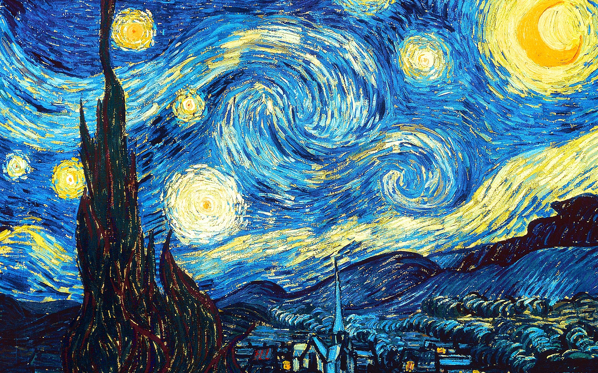

Vincent Van Gogh

Namanya Vincent van Gogh (1853-1890); dia adalah seorang seniman pasca-impresionis dari Belanda yang lukisannya sangat terkenal dalam sejarah seni. Sapuan kuasnya yang dramatis, penggunaan warna yang cerah, dan keahliannya dalam menangkap momen serta menggambarkan cahaya dianggap revolusioner. Meskipun baru mendapatkan popularitas di akhir hidupnya, perjuangan dan hasratnya membuka mata dunia tentang apa artinya menjadi seorang seniman sejati.
Lukisan dia yang populer
1. STARRY NIGHT

The Starry Night
adalah lukisan terkenal karya Vincent van Gogh, yang dibuat pada tahun 1889 ketika ia tinggal di rumah sakit jiwa di Prancis. Lukisan ini menggambarkan langit malam yang berputar-putar dengan bintang-bintang terang dan bulan sabit di atas sebuah desa yang tenang. Dikenal dengan warna-warna yang berani dan sapuan kuas yang ekspresif, lukisan ini mencerminkan intensitas emosional dan gaya Van Gogh yang unik. Lukisan ini merupakan salah satu karya Post-Impresionisme yang paling ikonik dan saat ini dipajang di Museum of Modern Art di New York City.
2. SUNFLOWERS
The Starry Night
adalah lukisan terkenal karya Vincent van Gogh yang dibuat antara tahun 1888 dan 1889, yang menampilkan bunga matahari berwarna kuning cerah dalam berbagai tahap mekar yang disusun dalam vas. Van Gogh melukisnya saat tinggal di Arles, Prancis. Lukisan-lukisan ini terkenal dengan warna kuningnya yang berani dan sapuan kuasnya yang tebal dan ekspresif, yang menghidupkan bunga-bunga tersebut dan menyampaikan rasa kehangatan dan kegembiraan. Van Gogh melihat bunga matahari sebagai simbol persahabatan dan rasa syukur, membuat karya-karya ini tidak hanya indah tetapi juga sangat bermakna. Saat ini, lukisan tersebut disimpan dan dipajang di Museum Van Gogh
3. IRISES
irises
adalah lukisan terkenal karya Vincent van Gogh yang dibuat pada tahun 1889 ketika ia tinggal di rumah sakit jiwa di Prancis. Lukisan ini menampilkan sekumpulan bunga iris biru dan ungu yang semarak, menampilkan warna-warna berani dan sapuan kuasnya yang tebal. Van Gogh terinspirasi oleh keindahan alam di sekelilingnya, dan ia menyusun bunga-bunga tersebut dengan cara yang hidup yang memberikan kesan bergerak. Lukisan ini dirayakan karena kedalaman emosional dan gayanya yang unik, yang mencerminkan kecintaan van Gogh pada bunga. Saat ini, versi “Irises” ini disimpan dan dipajang di Museum Van Gogh, Amsterdam, dan tetap menjadi salah satu karyanya yang paling dikagumi.
4. BEDROOM IN ARLES
Bedroom in Arles
adalah salah satu karya paling terkenal dari Vincent van Gogh, yang ia lukis pada tahun 1888 ketika tinggal di kota Arles, Prancis. Lukisan ini menampilkan kamar tidur pribadinya di "Yellow House" (Rumah Kuning), tempat ia berharap bisa menciptakan sebuah koloni seniman. Kamar tidur ini adalah tempat di mana van Gogh mencari ketenangan dan peristirahatan, terutama setelah ia mulai menghadapi berbagai masalah mental dan emosional. Lukisan ini hadir dalam tiga versi utama.
5. THE POTATO EATERS

The potato eaters
adalah salah satu lukisan awal yang paling terkenal karya Vincent van Gogh. Dilukis pada bulan April 1885, karya ini menggambarkan sekumpulan petani yang sedang makan malam dengan hidangan sederhana berupa kentang. Lukisan ini mencerminkan empati van Gogh terhadap kehidupan para petani dan pekerja keras di pedesaan. Ini juga merupakan salah satu usaha awalnya untuk membuktikan kemampuan sebagai seniman dengan subjek yang kompleks.